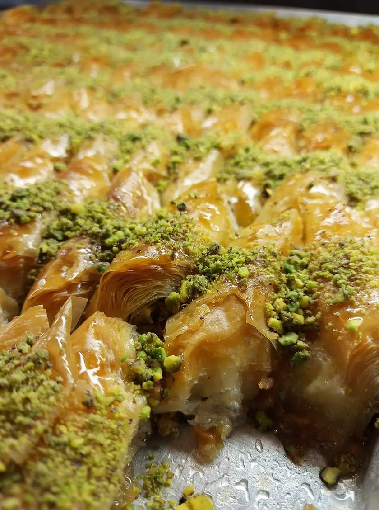
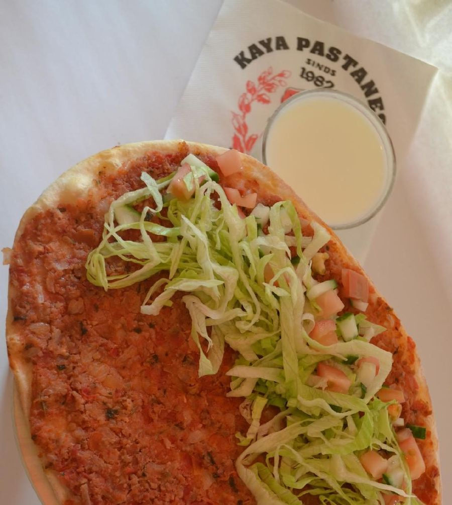
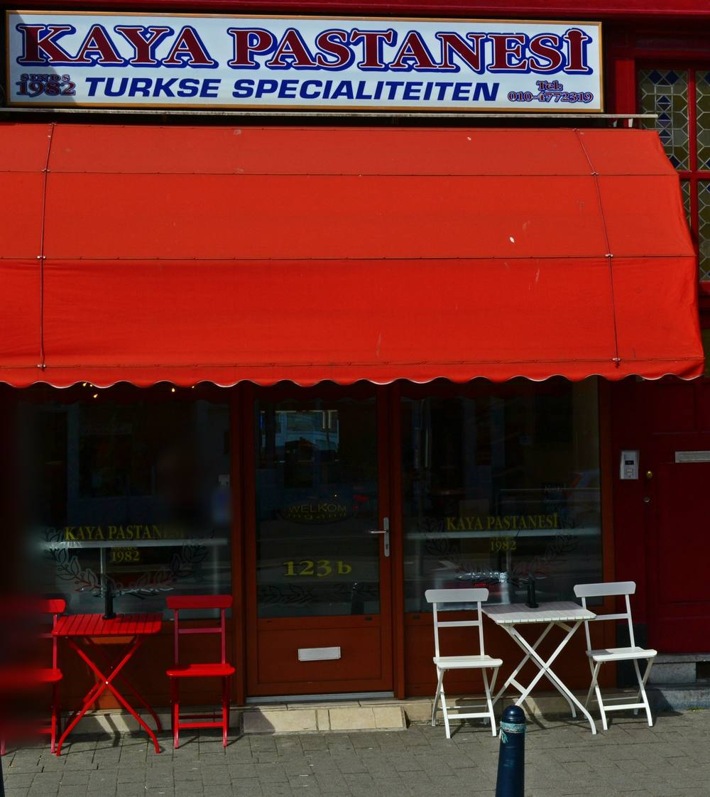
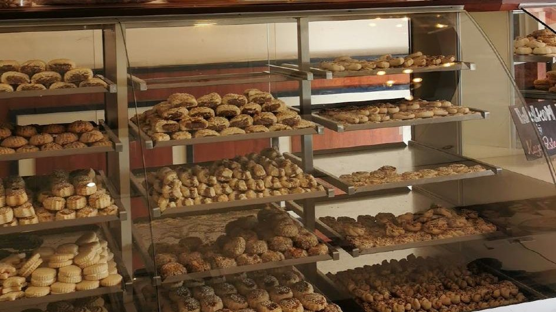
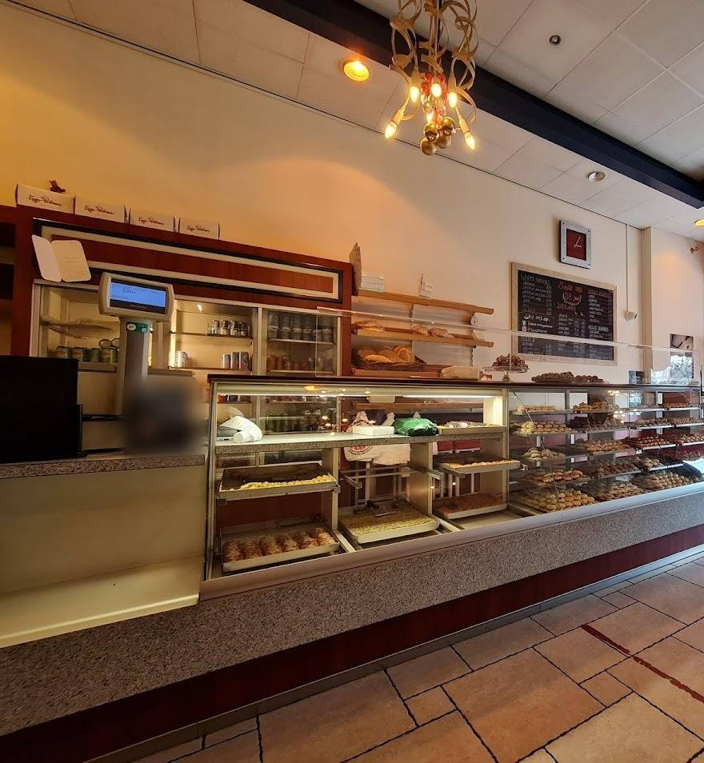
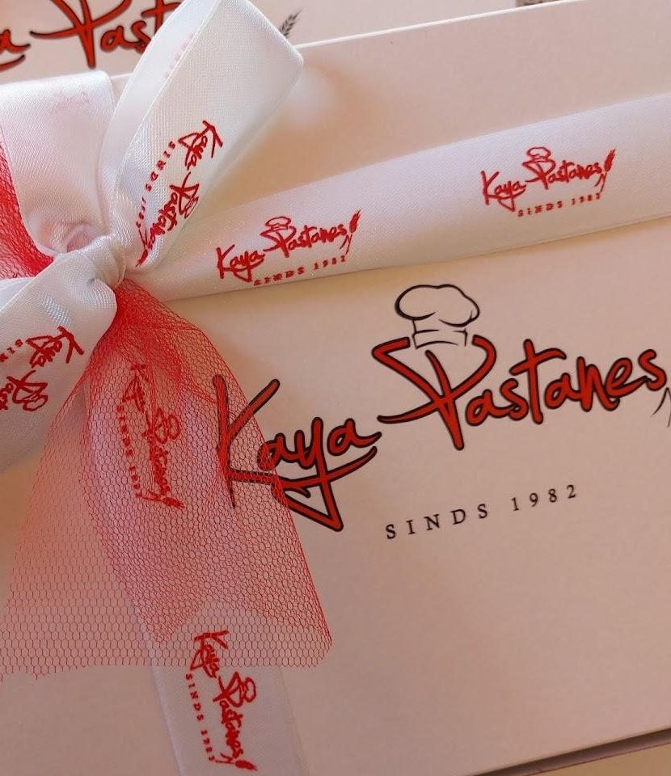

Turkse specialiteiten · Rotterdam
Baklava en lahmacun, sinds 1982.
Baklava, lahmacun, börek en Turkse pizza aan de 1e Middellandstraat in Rotterdam-West.
4,5 uit 103 Google-reviewsMiddelland, Rotterdam
Van lahmacun tot lokum
Dit noemen gasten in hun reviews. Tik aan wat je wilt halen, dan staat je vraag klaar voor je telefoontje.

Nog niets aangetikt. Wat er vandaag ligt? Bel even of kom langs.
Zet het klaarTurkse specialiteiten, al meer dan veertig jaar

Op ons bord staat het al: sinds 1982, Turkse specialiteiten. Een gast schreef over de oprichter, zijn dochter en later zijn kleinzoon achter de toonbank. Anderen schrijven over een zaak die onlangs mooi is verbouwd.
Verbouwd, maar het hart en de gastvrijheid zijn hetzelfde gebleven.Samengevat uit de review van Rob op Google, niet letterlijk geciteerd.
Van vitrine tot doos met strik



Zet klaar wat je komt halen
1 Wat wil je halen?
2 Voor wie?
3 Wanneer kom je langs?
Bel even, dan hoor je meteen wat er vandaag ligt.
Waarom Kaya
Ervoor omrijden
Een klant schrijft dat ze van oost naar west rijdt voor de lahmacun en de baklava.
Klanten van jaren
Gasten schrijven dat ze hier al bijna dertig jaar komen, of al sinds hun dertiende.
Verbouwd, zelfde zaak
Volgens gasten is de zaak onlangs mooi verbouwd en heel schoon, met dezelfde gastvrijheid als altijd.
Gelezen op Google
Komt al bijna dertig jaar en rijdt van oost naar west voor de beste lahmacun en baklava van Rotterdam.
IngeKomt hier al sinds de leeftijd van 13 voor de Turkse pizza, en gaat nooit weg zonder baklava dolama.
RobDe lahmacun wordt vers met de hand gemaakt, en de zaak is mooi verbouwd.
OwenSamengevat uit reviews op Google, niet letterlijk geciteerd.
Van lijstje tot toonbank
Kies wat je wilt
Tik hierboven aan wat je komt halen en voor wie.
Bel even
Op 010 477 2319. Je hoort meteen wat er vandaag ligt.
Kom langs
1e Middellandstraat 123B, in Rotterdam-West.
Wat mensen ons vragen
Waar zitten jullie?
1e Middellandstraat 123B, 3021 BD Rotterdam, in Rotterdam-West. Route in Google Maps.
Wat hebben jullie?
Gasten noemen in hun reviews onder meer baklava, baklava dolama, lahmacun, börek, Turkse pizza, koekjes en lokum. Bel even voor wat er vandaag ligt.
Hoe laat zijn jullie open?
Bel even voor de tijden van vandaag: 010 477 2319.
Doen jullie mee met Too Good To Go?
Ja, je vindt ons ook op Too Good To Go.
Kan ik vooraf iets vragen?
Bel 010 477 2319. Hierboven zet je klaar wat je wilt zeggen.
In Middelland
1e Middellandstraat 123B
3021 BD Rotterdam
Tijden van vandaag? Bel even: 010 477 2319.
Zin in baklava?
Bel even of zet klaar wat je komt halen. Je vindt ons aan de 1e Middellandstraat 123B.